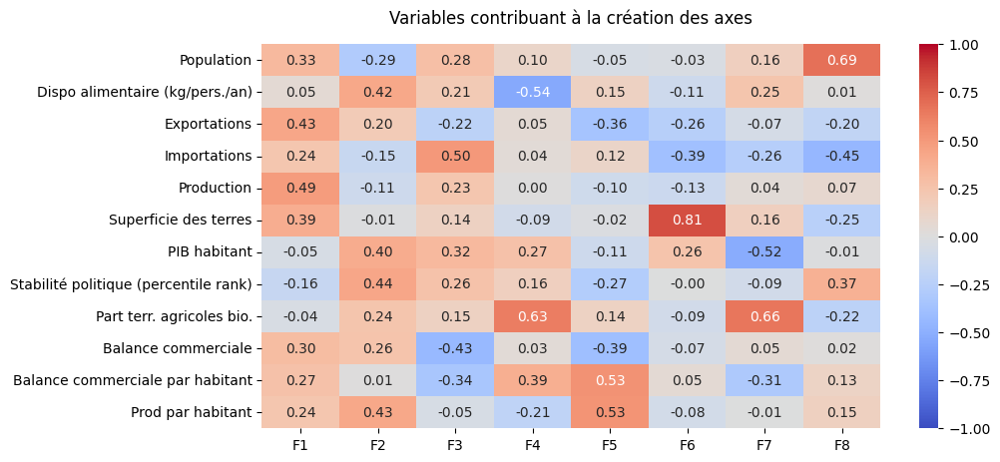
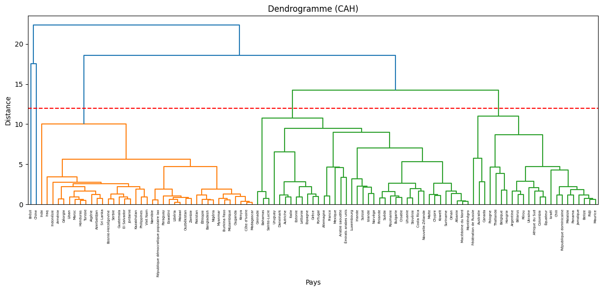
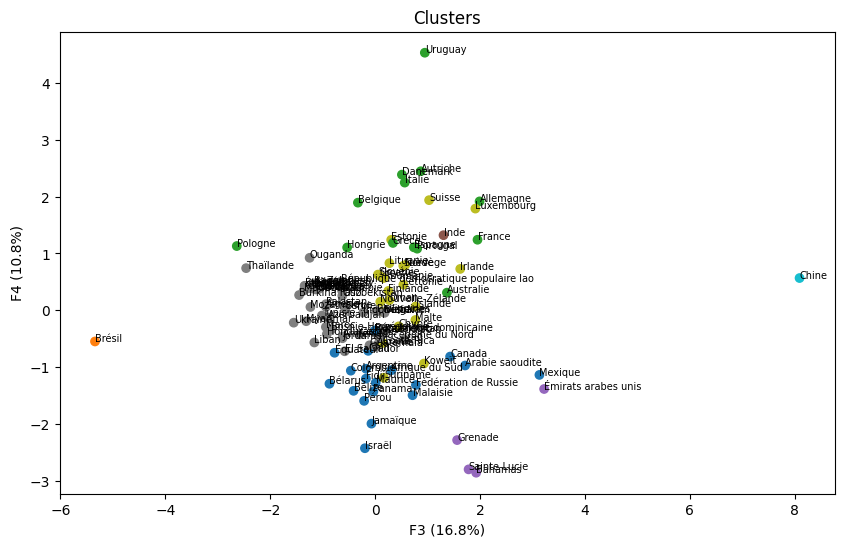

- 103pays retenus, aucune valeur manquante
- 5sources internationales fusionnées
- 3marchés cibles en sortie d'analyse
01 Contexte & besoin métier
Une entreprise souhaite se développer à l'international et cherche vers quels pays exporter en priorité.
Un bon marché d'export pour du poulet biologique doit réunir plusieurs conditions : un pouvoir d'achat suffisant, une culture de consommation bio déjà installée, une dépendance aux importations de viande (un pays qui produit assez pour lui-même n'a aucune raison d'acheter) et une stabilité politique compatible avec un engagement commercial durable.
Aucun de ces critères ne suffit seul, et ils vont parfois dans des sens opposés : un pays riche et stable peut aussi être un gros producteur, donc un concurrent. Il faut donc croiser une dizaine d'indicateurs à la fois, ce qu'un simple tri ne permet pas.
02 Données
Cinq sources publiques, fusionnées sur le couple pays / année :
- FAOSTAT : population, bilans alimentaires (production, importations, exportations, disponibilité), superficie des terres agricoles, terres en agriculture biologique.
- Banque mondiale : PIB par habitant en parité de pouvoir d'achat, indice de stabilité politique exprimé en rang centile.
Qualité et limites
- Les sources ne couvrent ni les mêmes pays ni les mêmes années. La fusion réduit mécaniquement le périmètre.
- Un filtre de complétude supérieure à 90 % a été appliqué, et l'analyse recentrée sur l'année 2023. Résultat : 103 pays, zéro valeur manquante.
- Échelles incomparables : la population varie d'environ 117 milliers à plus de 1,45 milliard d'habitants, pour une moyenne de 61 millions et un écart-type de 203 millions. L'écart-type vaut plus de trois fois la moyenne.
- Les 103 pays restants sont ceux qui publient des statistiques fiables. Les marchés les moins documentés sont donc absents de l'analyse, ce qui est une limite, mais cohérente avec un objectif d'export sécurisé.
03 Démarche
-
Comparer les pays à taille égale
Les variables en valeur absolue ont été converties en ratios rapportés à la population ou à la superficie.
Pourquoi ce choix
Une forte population aurait dominé toute l'analyse : la Chine et l'Inde se seraient détachées sur le seul critère de leur taille. Raisonner par habitant remet les 103 pays sur une base comparable.
-
Construire trois indicateurs absents des sources
Aucune source ne fournissait directement les notions utiles à la décision. Trois variables ont donc été calculées : la part des terres agricoles en bio, pour avoir une idée de la maturité du marché biologique ; la balance commerciale par habitant, exportations moins importations ; et la dépendance aux importations, rapportant la production à la population.
Pourquoi ce choix
Ce sont ces trois variables qui portent la question métier. Sans elles, l'analyse aurait décrit des économies agricoles en général, pas des débouchés pour du poulet biologique en particulier.
-
Éliminer les redondances avant l'analyse factorielle
L'examen des corrélations a révélé des variables très liées : la balance commerciale et les exportations atteignent 0,90. Les colonnes redondantes ont été retirées avant de poursuivre.
Pourquoi ce choix
Deux variables quasi identiques comptent double dans une analyse factorielle : elles tirent artificiellement les axes dans leur direction et surpondèrent une dimension au détriment des autres. Les retirer évite que le résultat reflète la structure du fichier plutôt que celle du marché.
-
Réduire la dimension par analyse en composantes principales
Les variables ont d'abord été mises à la même échelle, puis une analyse en composantes principales (ACP) a résumé les données en huit axes. Les quatre premiers expliquent 27,2 %, 21,0 %, 16,8 % et 10,8 % de l'information totale.

Pourquoi analyser le plan F3-F4 et non F1-F2
Le premier plan (F1-F2) explique davantage de variance (48,2 % contre 27,6 %), mais il décrit surtout la puissance agricole des pays.
Sur le cercle des corrélations, c'est le plan F3-F4 qui apporte le plus d'informations utiles : il oppose la dépendance aux importations et la maturité du marché bio, les deux critères qui comptent pour savoir si un pays achètera du poulet bio étranger.
-
Classification hiérarchique, puis rejet de cette piste
Une classification ascendante hiérarchique a été construite selon la méthode de Ward. Le dendrogramme, coupé à une distance de 12, donne trois groupes.

Pourquoi cette méthode a été écartée
Trois groupes pour 103 pays produisent des ensembles trop hétérogènes pour être actionnables : le groupe des « pays développés » réunissait aussi bien des importateurs nets que de gros exportateurs concurrents. Mettre un client potentiel et son concurrent dans le même groupe ne permet pas de décider.
La classification hiérarchique a donc surtout servi à montrer qu'il fallait plus de groupes, avant de passer à une méthode qui permet d'en fixer le nombre.
-
Partitionnement en huit groupes
Un K-means a été appliqué sur les coordonnées factorielles, avec huit groupes. Chacun a ensuite été profilé sur les moyennes de ses variables d'origine : PIB par habitant, engagement bio, stabilité politique, balance commerciale, production.
-
Écarter des groupes selon la question commerciale
Les huit profils ont été confrontés un à un à la question commerciale :
- Écartés pour concurrence. Les puissances agricoles exportatrices et autosuffisantes n'importent quasiment pas de volaille.
- Écartés pour risque. Les groupes cumulant instabilité politique, PIB par habitant faible ou marché bio immature.
- Non prioritaires. Deux groupes intéressants mais pénalisés par une stabilité moyenne ou une population trop faible pour justifier une logistique d'export.
- Finalistes. Deux groupes restants, tous deux riches, stables et sensibles au bio.
L'arbitrage final
Les deux finalistes se départagent sur un seul critère : le sens de leur balance commerciale. Le premier exporte plus qu'il n'importe : ce serait donc un concurrent plutôt qu'un client. Le second importe davantage tout en affichant une part de terres bio notable : il a le besoin et la culture de consommation. C'est lui qui a été retenu.
04 Résultats & impact

Trois marchés prioritaires ressortent de l'analyse : la Suisse, le Luxembourg et l'Irlande.
Ces trois pays partagent le même profil : PIB par habitant élevé, forte stabilité politique, part significative de terres en agriculture biologique, et balance commerciale agroalimentaire qui les place du côté des acheteurs. Ils ont le pouvoir d'achat, l'appétence pour le bio et le besoin d'importer.
Recommandations
- Prospecter d'abord la Suisse et le Luxembourg : marchés à fort pouvoir d'achat et proches, ce qui réduit le coût du transport et son empreinte carbone, un argument cohérent pour un produit bio.
- Traiter l'Irlande séparément. Le pays est également un producteur agricole : le positionnement doit viser un segment premium plutôt qu'une concurrence frontale sur le volume.
- Ne pas rouvrir les groupes écartés pour concurrence. L'analyse montre que ces pays produisent assez pour ne pas avoir besoin d'importer, de façon durable.
- Mettre à jour chaque année. Les sources sont publiques et le traitement est automatisé dans le notebook : la mise à jour demande peu de travail.
05 Limites & prochaines pistes
L'analyse porte sur une seule année. Un pays en forte progression sur le bio et un pays stable apparaissent identiques en 2023, alors que l'évolution compte beaucoup pour choisir un marché.
Aucune donnée propre à la volaille biologique. Les bilans alimentaires de la FAO ne descendent pas à ce niveau de détail. La maturité du marché bio est approchée par la part de terres cultivées en bio, ce qui reste un indicateur indirect : un pays peut cultiver peu en bio et en consommer beaucoup, précisément parce qu'il importe.
Le nombre de groupes reste un choix. Huit groupes se sont révélés exploitables, mais cette valeur n'a pas été confirmée par une méthode statistique : elle vient du constat que trois groupes ne suffisaient pas.
Prochaines pistes
- Étendre l'analyse sur cinq à dix ans pour distinguer marchés installés et marchés en croissance.
- Stabiliser le nombre de groupes par une méthode formelle (score de silhouette ou critère du coude) plutôt que par appréciation.
- Compléter par des données douanières spécifiques à la viande de volaille bio, absentes des sources publiques utilisées.
- Confronter les trois pays retenus aux contraintes réglementaires d'exportation, hors périmètre de cette analyse.